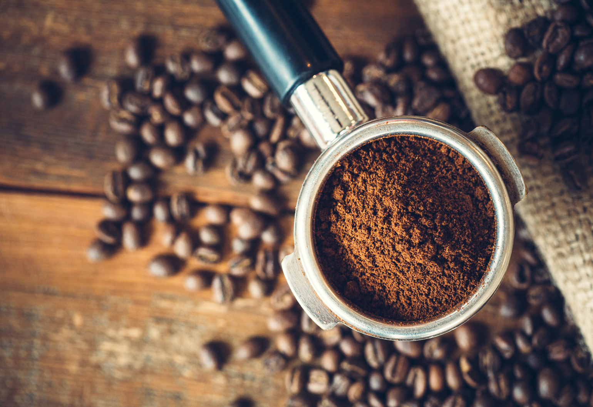
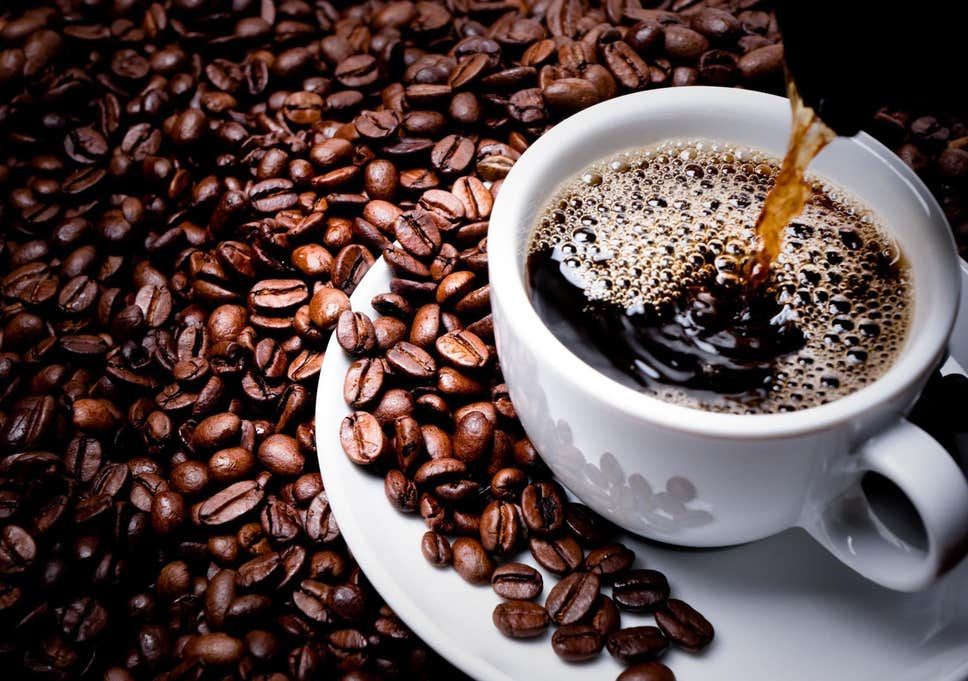

|  |
Use an aeropress to make espresso. Put the filter into the filter cap and twist it onto the chamber. Set the the chamber on top of the glass you want to serve the cappuccino in and measure 1 mounded scoop coffee into the chamber. Carefully pour boiling hot water up to the one mark. Stir the espresso for 10 seconds and then insert the aeropress plunger into the chamber. Slowly press down until you hit the grounds. This will extract the espresso. |
|  |
Pull a shot of espresso from an espresso machine. An espresso machine is one of the best ways to get espresso with rich crema on top. Follow your machine's instructions to fill the portafilter with espresso grounds and insert it in the brew head. Start the machine to get a single or double shot of espresso. |
 |
Pour the milk into the espresso. Hold the cup with the espresso in it with one hand. Tilt it to the side and use your other hand to slowly pour the steamed milk into the center of the espresso. As the cup fills up, gradually move the cup, so it's level and pour a little faster to get the foam onto the top of the drink. Serve the cappuccino immediately. |